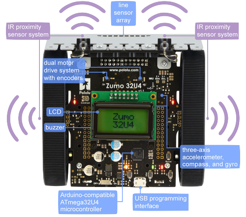

The robot's components
This project, done at Polytech Paris-Saclay, consist of using a robot: the Zumo 32U4 to fight in an arena with other robots (of the same type) while respecting certain criteria. We were in a team of 4 people.
We had, in fact, to program the robot so that it could perform a series of independant tasks.
This project nurtured my skills as an engineer in electronics and informatics like, for instance, to read the datasheet of an electronic componant.
Description
Project finished
3 - 4 months (2021)
Team of 4 people
Technologies
ZUMO 32U4
C
Arduino IDE
GitHub
Share